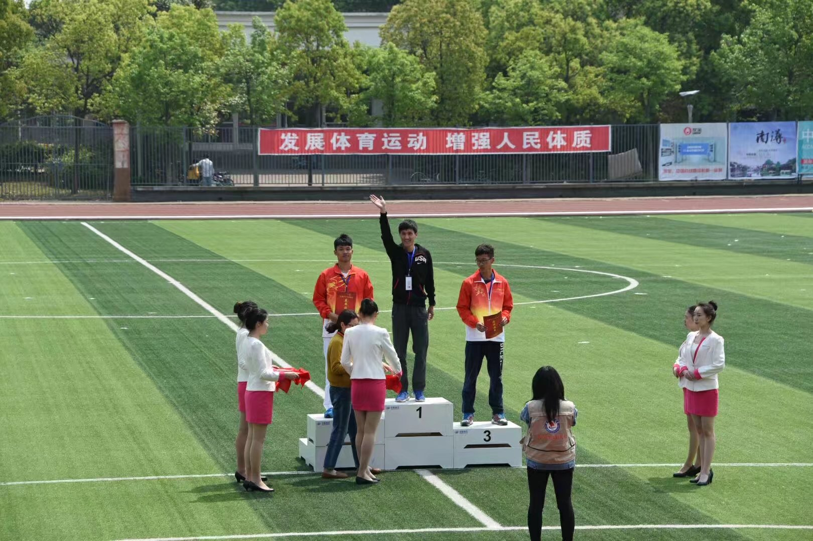

新闻中心more>>  我校学生获省大运会男子跳远冠军 比赛时间：4月26日 获奖成绩：6.78米 learn more>> 2017-04-01【访谈 用户篇】 “有为屌丝”在路上 2017-04-01【有奖活动】 给父母的三行书信 2017-03-30《程序猿，请晒出你的童年》活动获奖公告 2017-03-28【访谈】 破茧成蝶--美女程序员的蜕变史 课程中心more>> CSS圆角进化论 CSS圆角的实现，经历了三大发展阶段：背景图片方式、CSS2.0+HTML标签模拟、CSS3.0圆角属性。本案例详细讲解每一种实现方式，并对实现的优缺点进行对比分析。 PHP开发 前端开发 JAVA开发 Android开发 媒体聚焦more>>